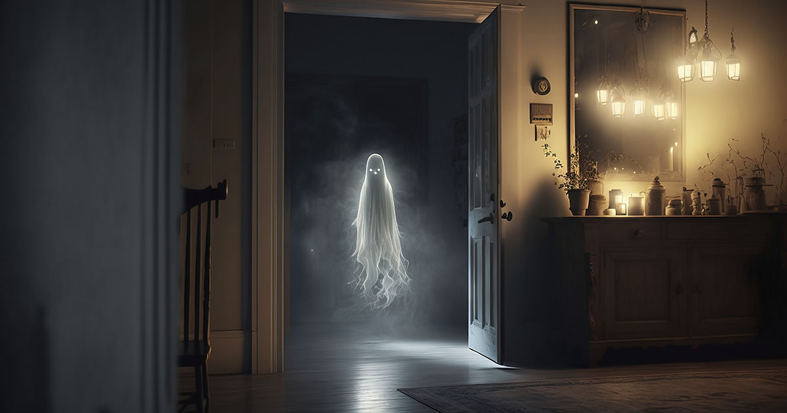

COMUNICARSE A TRAVES DEL TACTO
COMUNICARSE A TRAVES DE LA ELECTRICIDAD
COMUNICARSE CON MOVIMIENTO O LANZANDO OBJETOS
COMUNICARSE MEDIANTE LA REPETICION
COMUNICARSE COMUNICARSE A TRAVES DEL HABLA
COMUNICARSE A TRAVES DE LA OUIJA
COMUNICARSE COMUNICARSE A TRAVES DEL OLFATO
COMUNICARSE MEDIANTE EQUIPO DE CAZAFANTASMAS
- 1. Comunicarse a través del tacto
Algunas personas reportan sentir escalofríos, caricias leves o presión en partes del cuerpo sin una causa aparente. Se dice que los fantasmas pueden transmitir emociones o intenciones mediante estas sensaciones.En algunos casos, los espíritus pueden alterar objetos, haciendo que se desplacen, caigan o incluso que los sientas como si alguien los sostuviera o tocara.En narraciones más intensas, hay testimonios de personas que han sido empujadas, agarradas o incluso rasguñadas por presencias invisibles.Algunas experiencias paranormales incluyen la sensación de un peso o presión repentina en el cuerpo, como si alguien estuviera tocando o apoyándose en una persona.En el folklore y en investigaciones paranormales, el tacto es considerado una manifestación fuerte, ya que implica que la entidad puede interactuar con el mundo físico.
- 2. Comunicarse manipulando la electricidad
Se cree que los espíritus pueden manipular objetos eléctricos. Así que, si la luz parpadea misteriosamente a cierta hora del día, podría no ser una coincidencia. Para darte una pista de quién podría ser el espíritu, podría intentar llamar tu atención sobre algo específico, como Luces parpadeantes, televisores que cambian de canal o radios que se encienden sin intervención humana son algunos ejemplos comunes en relatos de actividad paranormal.Se han reportado distorsiones en grabaciones de audio o video, voces captadas en frecuencias de radio y sonidos extraños en teléfonos. Esto se relaciona con la posibilidad de que los espíritus usen la electricidad como medio de comunicación.Algunas personas experimentan descargas eléctricas leves o sienten una especie de campo energético a su alrededor cuando hay una presencia paranormal. En investigaciones paranormales, se utilizan medidores de campos electromagnéticos para detectar anomalías. En lugares con actividad sobrenatural, estos dispositivos pueden registrar variaciones inexplicables.Este fenómeno está presente en muchos relatos sobre fantasmas, y algunas teorías sugieren que la energía residual de las personas podría continuar existiendo después de la muerte, interactuando con el entorno eléctrico.

- 3. Comunicarse con moviendo o lanzando objetos
El movimiento o lanzamiento de objetos es una de las formas más impactantes en las que se ha descrito la comunicación paranormal. Se cree que ciertos espíritus o entidades pueden ejercer fuerza sobre el mundo físico, lo que a veces se asocia con la actividad de poltergeists. ALGUNAS MANIFESTACIONES SON LAS SIGUIENTES: Desde sillas que se mueven hasta puertas que se abren o cierran sin intervención visible, estos fenómenos son comunes en reportes paranormales.Algunos relatos cuentan que ciertos espíritus pueden arrojar objetos, como piedras, utensilios o libros, a manera de advertencia o para llamar la atención.Se dice que entidades pueden manifestarse golpeando paredes, mesas o muebles, produciendo sonidos que a veces parecen responder preguntas en investigaciones paranormales. En casos más extremos, se reporta el movimiento de camas, armarios o incluso cambios en la distribución de los objetos dentro de una habitación.Este tipo de fenómeno suele estar ligado a energías intensas o espíritus con una fuerte voluntad de comunicarse. En algunas teorías, se habla de que estas entidades pueden acumular energía para afectar el mundo material.
- 4. Comunicarse mediante la repetición
La repetición es una de las formas en que los fenómenos paranormales pueden manifestarse y ser interpretados como intentos de comunicación por parte de entidades o espíritus. Este tipo de comunicación se presenta de distintas maneras: Golpes en las paredes, pasos constantes en un mismo lugar o la repetición de un nombre o frase pueden indicar una presencia que intenta llamar la atención.Algunas manifestaciones parecen seguir un ciclo, ocurriendo en el mismo horario, lugar o bajo ciertas condiciones. Esto puede sugerir un intento de transmitir un mensaje o un eco energético de eventos pasados.Algunas personas reportan ver figuras o símbolos constantemente, lo que podría interpretarse como una forma de comunicación simbólica.En algunos lugares con actividad paranormal, los mismos sucesos ocurren una y otra vez, como si la entidad estuviera atrapada en un bucle o tratando de mostrar algo importante.Este fenómeno se ha explorado en teorías sobre cómo las entidades pueden estar atrapadas en patrones de energía o cómo ciertos eventos traumáticos pueden dejar una "huella" en el entorno.

- 5. Comunicarse a través del habla
La comunicación mediante el habla es una de las formas más directas e impactantes en las que se ha descrito la interacción con entidades paranormales. Se han reportado casos en los que los espíritus parecen manifestarse a través de voces, susurros o incluso diálogos completos. Aquí algunas maneras en que esto ocurre: Muchas personas afirman haber escuchado su nombre o frases cortas cuando están solas. Estos sonidos suelen ser difíciles de identificar y pueden ser débiles o distorsionados.Las psicofonías son grabaciones en las que se captan voces que no estaban presentes en el momento de la grabación. Investigadores paranormales utilizan equipos de audio para analizar estos registros en busca de mensajes de entidades. Algunos creen que ciertos individuos pueden servir de "canal" para los espíritus, permitiéndoles hablar a través de ellos en estados de trance o sesiones espiritistas. Se han documentado casos en los que entidades parecen comunicarse a través de radios, teléfonos o televisores, enviando mensajes o produciendo sonidos específicos.
Este tipo de comunicación es especialmente inquietante porque implica una conexión más clara con el mundo físico. En algunos casos, las voces parecen responder preguntas o repetir palabras de manera significativa.
- 6. Comunicarse a través de tablas Ouija
Para facilitar la comunicación entre fantasmas, muchos grupos de cazafantasmas instalan tablas de ouija en habitaciones y edificios que se sospecha están embrujados. El espíritu puede entonces deletrear lo que quiere decir moviendo una tablita hacia varias letras y números. También puede responder "sí" y "no" a preguntas específicas.Para muchas personas, la Ouija es una herramienta de comunicación con el más allá, utilizada en sesiones donde se hacen preguntas y se espera una respuesta de los espíritus.Existen explicaciones científicas sobre el fenómeno de la Ouija. Algunos investigadores creen que el movimiento del indicador puede estar influenciado por el efecto ideomotor, un fenómeno en el que los participantes mueven el objeto inconscientemente.Hay numerosos testimonios sobre sesiones que terminan con respuestas inesperadas, sensaciones extrañas o incluso eventos perturbadores posteriores.En diversas tradiciones espirituales y religiosas, se advierte sobre el uso de la Ouija, ya que algunos creen que puede abrir puertas a energías desconocidas o entidades no deseadas.
- 7. Comunicarse a través del olfato
Muchas personas afirman percibir el perfume, el tabaco o algún olor asociado a un ser querido que ha fallecido, interpretándolo como una visita espiritual. Algunas presencias se manifiestan con aromas fuertes como azufre, podredumbre o humedad intensa. En el folklore, estos olores suelen asociarse con entidades negativas o advertencias de peligro.En ciertos relatos, se perciben aromas a incienso, flores o especias sin que haya una fuente física aparente, lo que algunas tradiciones interpretan como señales de presencias benignas o sagradas.- A veces, un olor aparece sin explicación y desaparece rápidamente, lo que refuerza la idea de que podría tratarse de una forma de comunicación sobrenatural.
Estos fenómenos han sido documentados en diversas culturas, y algunas hipótesis sugieren que podrían ser restos energéticos o manifestaciones sensoriales de entidades.
- 8. Comunicarse mediante equipo de cazafantasmas
Los equipos de cazafantasmas utilizan diversas herramientas tecnológicas para intentar comunicarse con entidades paranormales. Algunos de los dispositivos más comunes incluyen:
- Grabadoras de audio: Se usan para captar psicofonías, que son sonidos o voces que no se escuchan en el momento de la grabación pero aparecen al reproducir el audio.
- Spirit Box: Es un dispositivo que escanea frecuencias de radio rápidamente, permitiendo que las entidades formen palabras o frases a través de las señales.
- Medidores de campo electromagnético (EMF): Se emplean para detectar cambios en los campos electromagnéticos, ya que se cree que las presencias paranormales pueden alterar estos niveles.
- Cámaras de espectro completo: Son cámaras modificadas para captar luz infrarroja y ultravioleta, lo que podría revelar figuras o anomalías invisibles al ojo humano.
- Sensores de movimiento y temperatura: Se utilizan para detectar cambios inexplicables en el ambiente, como bajadas bruscas de temperatura o movimientos sin causa aparente.